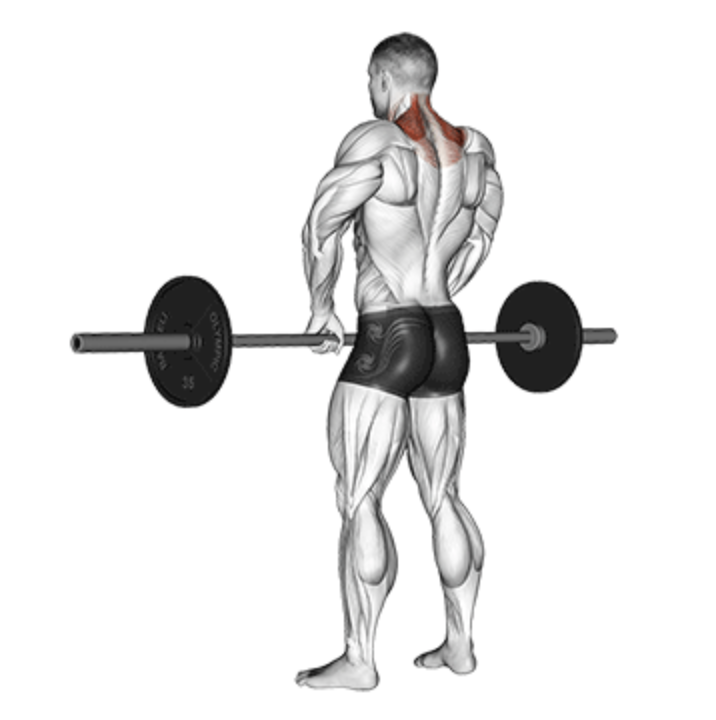
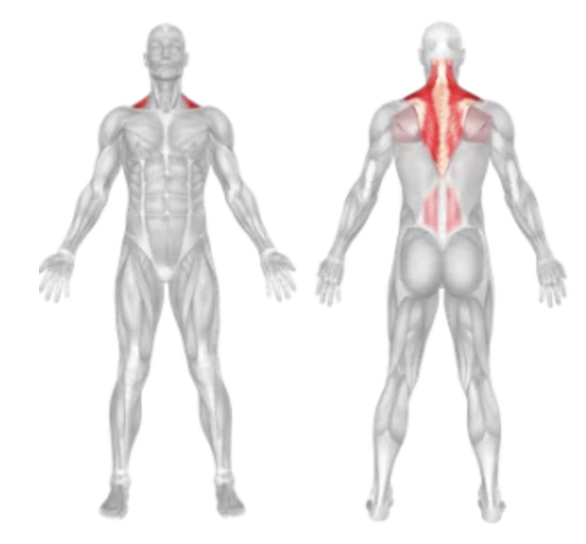
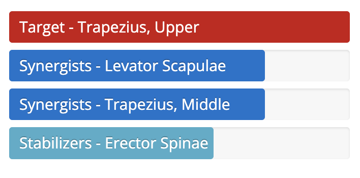

Barbell Shrug
Setup
Stand upright with your feet shoulder-width apart and a barbell in front of you.
Bend at the hips and knees to grip the barbell with both hands, using an overhand grip.
Lift the barbell by extending your hips and knees, standing fully upright with the barbell resting against your thighs.
Keep your arms straight and your chest up with a firm grip on the bar.
Engage your core and maintain a neutral spine throughout the movement.

Execution
Shrug:
Exhale as you elevate your shoulders as high as possible toward your ears.
Pause:
Hold the top position for a brief moment, squeezing your traps.
Lower:
Inhale as you slowly lower your shoulders back to the starting position.
Repeat:
Perform the desired number of reps with control.
Tips for Effectiveness
Don't Roll Shoulders:
Lift straight up and down to avoid unnecessary shoulder strain.
Controlled Motion:
Avoid jerking or bouncing the weight—focus on slow, deliberate movement.
Keep Arms Relaxed:
Let your traps do the work; don’t pull with your arms.
Proper Breathing:
Exhale during the shrug, inhale during the lowering phase.
Benefits of Barbell Shrugs
Trap Strength:
Primarily targets the upper trapezius muscles for a stronger upper back.
Posture Support:
Strengthens muscles that contribute to upright posture.
Neck and Shoulder Stability:
Helps support heavy lifting and overhead movements.
Visual Size:
Enhances the thickness and appearance of the upper back and neck area.
Muscles Worked in Barbell Shrugs


Do you want to change the language of this page?
English
Malayalam
Tamil
Hindi